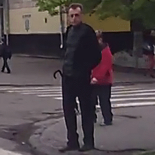
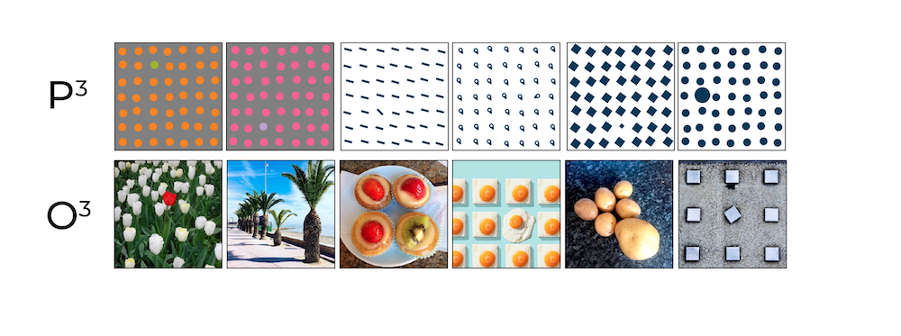
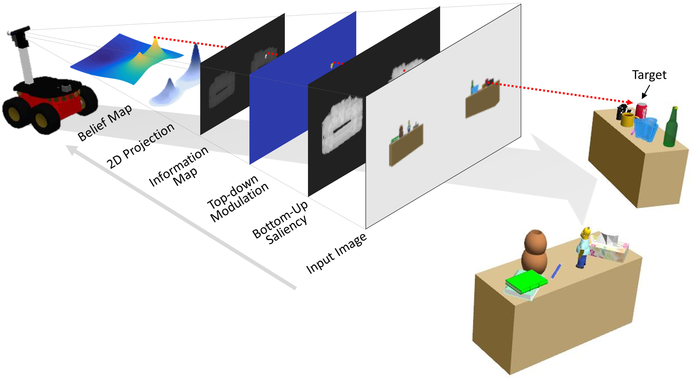

Research
Main Research
Pedestrian Trajectory Prediction
- An intelligent system should be able to understand the intentions or underlying motives of pedestrians and to predict their forthcoming actions. To date, only a few public datasets were proposed for the purpose of studying pedestrian behavior prediction in the context of intelligent driving. To this end, we propose a novel large-scale dataset designed for pedestrian intention estimation (PIE). We conducted a large-scale human experiment to establish human reference data for pedestrian intention in traffic scenes. We propose models for estimating pedestrian crossing intention and predicting their future trajectory..
[code] [dataset] [paper]
Pedestrian Action Anticipation
- One of the major challenges for autonomous vehicles in urban environments is to
understand and predict other road users’ actions, in particular, pedestrians at the point of crossing.
We propose a solution for the problem of pedestrian action anticipation using a novel stacked RNN
architecture in which information collected from various sources, both scene dynamics and visual
features, is gradually fused into the network at different levels of processing. We investigate
the impact of the length of observation, time to event, types of features and fusion strategies on the performance of
the proposed method.
[code] [dataset] [paper]


How Pedestrians Interact with Traffic
- Understanding road users behavior, in particular, pedestrians is a daunting task. Pedestrian decision-making process
can be influenced by various factors including road conditions, pedestrian's characteristics, environmental conditions,
social forces, etc. As part of my research, I am interested to identify what
impacts a pedestrian to make a crossing decision. This includes determining what types of behavior
pedestrians demonstrate at the time of crossing, and how do they communicate with traffic.
[dataset] [paper]
Challenges in Detecting Pedestrian
- Object detection and recognition in traffic scenes is challenging, particularly when it comes to identifying pedestrians.
Pedestrians can assume different poses, their appearances may change significantly (especially under different weather
conditions) and can be mistaken with objects with similar visual properties. My objective is to measure the limitations of existing object detection methods using traffic data collected under various conditions and propose
solutions to further improve their performance.
[dataset] [paper]
Are They Going to Cross?
- Using the knowledge of pedestrian behavior and ability to efficiently search and detect objects in the scene,
I working on addressing the problem of pedestrian intention estimation. Here, the goal is to identify the pedestrian,
understand their surrounding context, interpret their actions, and predict whether they are going to make a crossing decision.
[dataset] [papers: arXiv, ICCVW, IV, Trans. IV] - 
- Despite recent successes in visual saliency prediction and near-human performance on benchmarks,
most of the saliency models do not properly capture some of the important properties of human visual
attention. We evaluate the behavior of 20 saliency models on two new datasets: artificial psychophysical
images and natural odd-one-out images. We show that majority of the models do not discriminate t
argets that differ by color, orientation and size, which are the features that strongly guide human attention.
[code] [dataset] [paper] - 
- The proposed algorithm guides the robot towards the sought
object using the relevant stimuli provided by the visual
sensors. We propose a new model that actively extracts visual
information via visual attention techniques and, in conjunction
with a non-myopic decision-making algorithm,
leads the robot to search more relevant areas of the environment.
We examine the effect of visual saliency on search with respect to the type of sought objects and
search environments such as structured office
environments and disaster cluttered envirnments.
[dataset] [paper] - To optimize the task of visual object search in unknown environments, we incorporated visual saliency to
identify which parts of the environment is more interesting, both in terms of standing out with respect
to the surroundings and similarity to the object of interest. We confirmed
the importance of using such a technique by performing extensive experiments both in highly complex simulated
and real environments using mobile robotic platforms.
[code] [papers: CRV14, i-SAIRAS, ISACS IROS, CRV16] - One of the common challenges in object tracking is the inclusion of background information in the object frame which can distract the tracker to the background. By replacing the rectangular-shaped frame with an active contour box that assumes the shape of the object, we minimized the background noise, and therefore improved the tracking process.